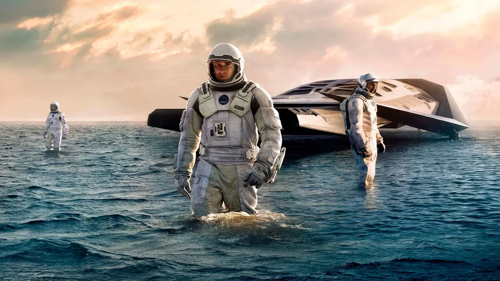
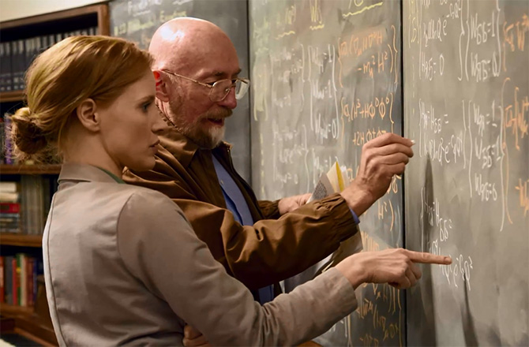
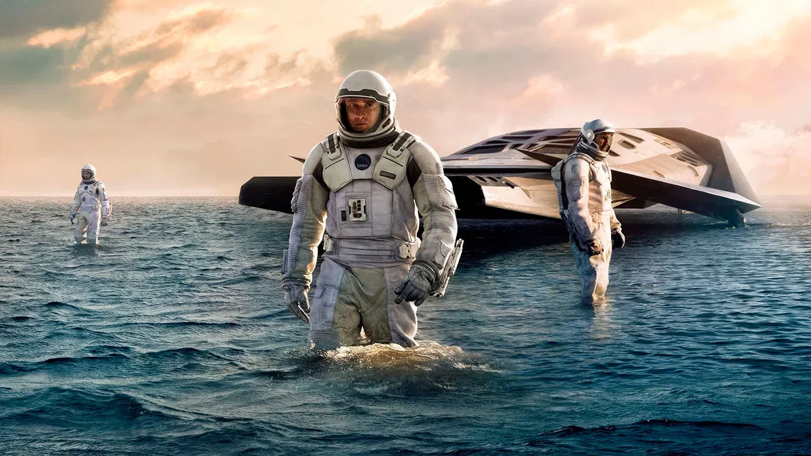
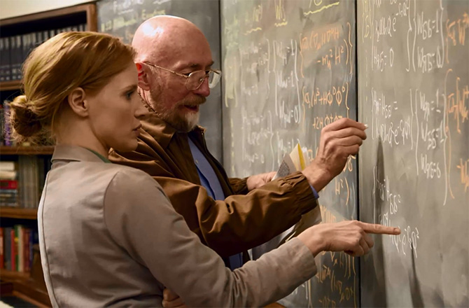

Información sobre Interestelar
Interstellar (conocida como Interestelar en Hispanoamérica) es una película épica de drama y ciencia ficción británico-estadounidense y canadiense de 2014, dirigida por Christopher Nolan y protagonizada por Matthew McConaughey, Anne Hathaway, Jessica Chastain, Michael Caine y Matt Damon. Ambientada en un futuro distópico donde la humanidad está luchando por sobrevivir, ya que la Tierra se está volviendo inhabitable por el polvo que está arrasando con todo, cuenta la historia de un grupo de astronautas que viajan a través de un agujero de gusano cerca de Saturno en busca de un nuevo hogar para la humanidad.
Los hermanos Christopher y Jonathan Nolan escribieron el guion, que tuvo su origen en un borrador que Jonathan desarrolló en 2007. Christopher Nolan produjo la película junto a su esposa Emma Thomas mediante su compañía productora Syncopy, y con Lynda Obst a través de Lynda Obst Productions. El físico teórico Kip Thorne, cuyo trabajo inspiró la película, fue productor ejecutivo y participó como consultor científico. Warner Bros., Paramount Pictures y Legendary Pictures cofinanciaron la película.
Interstellar se estrenó el 26 de octubre de 2014 en Los Ángeles. En América del Norte se lanzó en película fotográfica, expandiendo su disponibilidad a otros lugares usando proyectores digitales. En los Premios de la Academia de 2014, la película ganó el Óscar a los mejores efectos visuales, y fue nominada por mejor banda sonora, mejor sonido y mejor diseño de producción. Recibió también varios premios y nominaciones, en particular por sus efectos visuales, fotografía, banda sonora y la actuación de Mackenzie Foy.
Sinopsis de Interestelar
Un grupo de científicos y exploradores, encabezados por Cooper, se embarcan en un viaje espacial para encontrar un lugar con las condiciones necesarias para reemplazar a la Tierra y comenzar una nueva vida allí. La Tierra está llegando a su fin y este grupo necesita encontrar un planeta más allá de nuestra galaxia que garantice el futuro de la raza humana.
 


